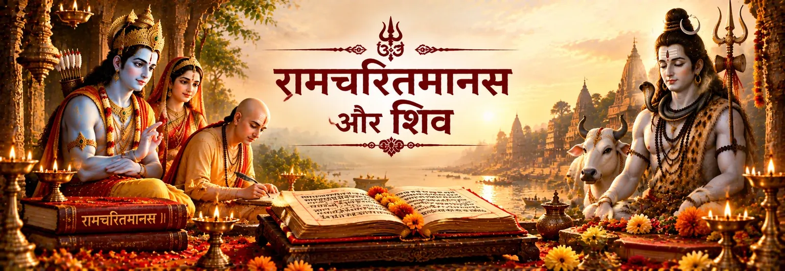

भवानी और शंकर
आरम्भिक वंदनाओं में भवानी और शंकर श्रद्धा और विश्वास के रूप में स्मरण किए जाते हैं और तुलसीदास रामकथा कहने से पहले शिव की कृपा की प्रार्थना करते हैं।

शास्त्र और परंपरा
तुलसीदास का रामचरितमानस राम और शिव को एक गहरे जुड़े हुए भक्तिपरक संसार में रखता है। शिव इस काव्य में दूरस्थ पात्र नहीं हैं; आरम्भ में उनका स्मरण होता है, वे पार्वती से राम की कथा कहते हैं और बार-बार ऐसे भक्त के रूप में सामने आते हैं जो राम की महिमा को जानता है।
काव्य स्वयं अपने कथास्रोतों को वेद, पुराण, वाल्मीकि रामायण और अन्य परंपराओं से जोड़ता है। इसलिए राम–शिव संबंध की मानस-व्याख्या को तुलसीदास की विशिष्ट भक्तिपरक दृष्टि के रूप में समझना चाहिए; हर विवरण को वाल्मीकि रामायण का मूल प्रसंग मान लेना उचित नहीं है।
आरम्भिक दृष्टि
बालकाण्ड रामकथा के विस्तार से पहले ही एक पवित्र भूमिका स्थापित कर देता है।
आरम्भिक वंदनाओं में भवानी और शंकर श्रद्धा और विश्वास के रूप में स्मरण किए जाते हैं और तुलसीदास रामकथा कहने से पहले शिव की कृपा की प्रार्थना करते हैं।
बालकाण्ड की भूमिका में तुलसीदास रामचरितमानस को ऐसी पवित्र कथा के रूप में प्रस्तुत करते हैं जिसे शम्भु ने अपने मन में धारण किया और पार्वती को सुनाया। यह मानस की अपनी धार्मिक संरचना का हिस्सा है।
तुलसीदास कहते हैं कि उनकी रचना वेद, पुराण और आगमों के अनुरूप है तथा वाल्मीकि रामायण में वर्णित सामग्री और अन्य स्रोतों को भी ग्रहण करती है। इससे मानस को केवल एक पुनर्कथन मानने के बजाय स्वतंत्र भक्तिपरक काव्य के रूप में पढ़ना अधिक उचित होता है।
कथावाचक के रूप में शिव
मानस की एक प्रमुख संरचनात्मक विशेषता शिव–पार्वती संवाद है। शिव और राम की भेंट तथा सती के संशय के बाद कथा पार्वती के प्रश्नों और शिव द्वारा राम के स्वरूप तथा कथा के विवेचन की ओर बढ़ती है। इसलिए शिव केवल उल्लेखित देवता नहीं हैं; उनकी वाणी धार्मिक शिक्षा के बड़े हिस्से को आगे ले जाती है।
काव्य में शिव राम के स्मरण में तल्लीन होते हैं और फिर कथा कहना आरम्भ करते हैं। यह चित्रण भक्तिपरक है—राम का स्वरूप शिव के हृदय में प्रतिबिंबित होता है और ध्यान के बाद शिव कथा कहते हैं। इस प्रकार कथावाचक स्वयं भक्ति-शिक्षा का अंग बन जाता है।
Ramcharitmanas · Bala Kanda · Bala Kanda · Rama Nama and Shiva
राम और शिव
मानस शिव को राम के प्रेमपूर्ण स्मरण से बार-बार जोड़ता है। शिव का ज्ञान केवल दार्शनिक विवेचन से नहीं, बल्कि भक्ति के माध्यम से भी व्यक्त होता है।
शिव–पार्वती संवाद में शिव-प्रेम को राम-भक्ति के विरोध में नहीं रखा गया है। यह संबंध संकीर्ण प्रतिस्पर्धा से दूर रहने और भक्ति को एक जुड़े हुए पवित्र मार्ग के रूप में देखने की प्रेरणा देता है।
बालकाण्ड राम-नाम की महिमा का वर्णन करता है और महेश को उसका जप करने वाला बताता है। इस प्रसंग में राम-नाम, शिव और काशी की पवित्र परंपरा एक-दूसरे से जुड़ती है और नाम स्वयं भक्ति का मिलन-बिंदु बन जाता है।
एक महत्वपूर्ण कथा
मानस में वह प्रसंग आता है जिसमें शिव और सती वन में राम से मिलते हैं। सती राम के दिव्य स्वरूप को लेकर संशय करती हैं और उनकी परीक्षा लेने के लिए सीता का रूप धारण करती हैं। यह प्रसंग सती और शिव की कथा में एक महत्वपूर्ण मोड़ बन जाता है।
इस प्रसंग का धार्मिक अर्थ महत्वपूर्ण है: शिव पहले से राम को पहचानते हैं, जबकि सती की परीक्षा संशय के परिणामों को सामने लाती है। आगे शिव पार्वती को राम के स्वरूप का विवेचन करते हैं। इस प्रकार कथा ज्ञान, विनय और भक्ति को एक साथ जोड़ती है।
Ramcharitmanas · Sati, Shiva and Rama · Bala Kanda · Shiva and Agastya
परंपरा को कैसे पढ़ें
राम और शिव की संयुक्त परंपरा को समझने का सबसे स्पष्ट तरीका है कि ग्रंथ की परत को नाम से पहचाना जाए। वाल्मीकि रामायण प्राचीन महाकाव्य-कथा का आधार देती है, जबकि तुलसीदास का मानस बाद की उत्तर भारतीय भक्तिपरक और धार्मिक दृष्टि से रामकथा का पुनर्सृजन करता है। शिव–पार्वती संवाद और शिव द्वारा राम की स्पष्ट महिमा-वर्णना इसी प्रस्तुति की केंद्रीय विशेषताएँ हैं।
यह भक्ति-संबंध को कम नहीं करता, बल्कि उसे अधिक स्पष्ट बनाता है। मानस को उसकी अपनी परंपरा में सम्मान के साथ पढ़ा जा सकता है—एक ऐसे प्रमुख राम-भक्ति ग्रंथ के रूप में जिसमें शिव और राम बार-बार श्रद्धा, शिक्षा और भक्ति के संबंध में आते हैं।
भक्त के लिए
रामचरितमानस ऐसी भक्तिपरक भूमि प्रस्तुत करता है जहाँ राम का स्मरण शिव के प्रति श्रद्धा को गहरा कर सकता है और शिव की आराधना हृदय को राम की ओर ले जा सकती है। इसकी सुंदरता अलग-अलग परंपराओं को एक ही ग्रंथ में मिला देने में नहीं, बल्कि उस सामंजस्य को सुनने में है जिसे मानस स्वयं रचता है।
भक्तों के सामान्य प्रश्न
हाँ। मानस में शिव को बार-बार राम के प्रति गहरी भक्ति रखने वाले रूप में प्रस्तुत किया गया है। शिव राम का स्मरण करते हैं, उनकी महिमा कहते हैं और पार्वती को उनकी कथा सुनाते हैं।
हाँ। बालकाण्ड की भूमिका में तुलसीदास शिव का स्मरण करते हुए उनकी कृपा से रामकथा कहने की बात करते हैं। काव्य रामचरितमानस को शम्भु से जुड़ी पवित्र कथा के रूप में भी प्रस्तुत करता है।
नहीं। तुलसीदास स्वयं अपनी रचना को अनेक शास्त्रीय और साहित्यिक धाराओं से जुड़ा बताते हैं। शिव–पार्वती के विस्तृत धार्मिक संवाद और राम-शिव भक्ति की स्पष्ट व्याख्या मानस तथा बाद की भक्तिपरंपरा की विशिष्ट विशेषताएँ हैं।
बालकाण्ड राम-नाम की महिमा बताते हुए महेश को उसका जप करने वाला कहता है और राम-नाम को काशी में मुक्ति तथा शिव की अपनी भक्तिपरंपरा से जोड़ता है।